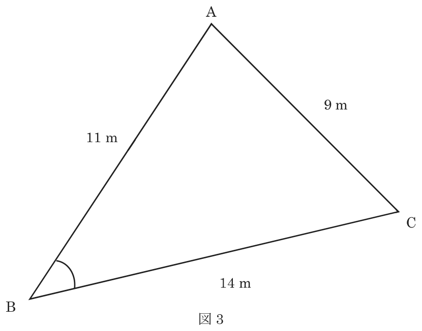
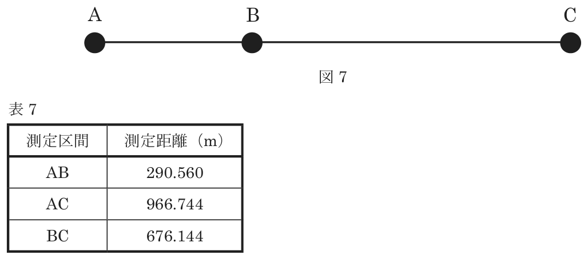
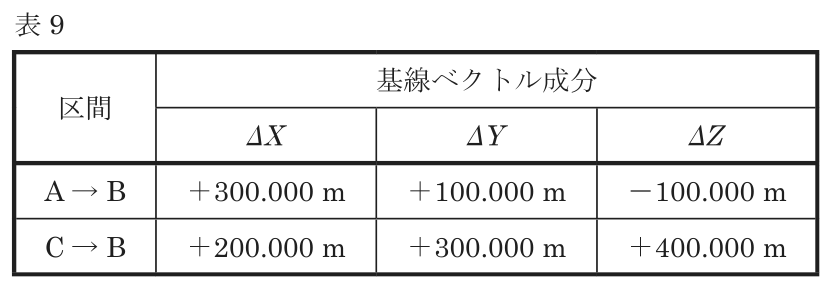
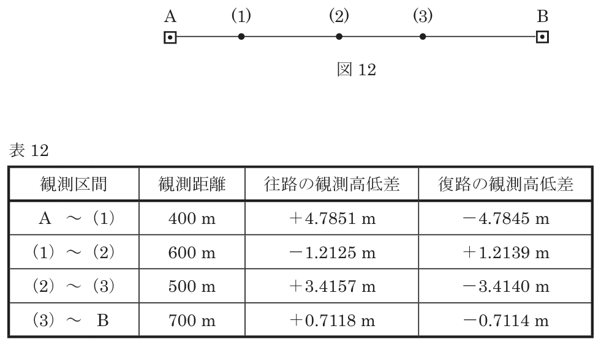
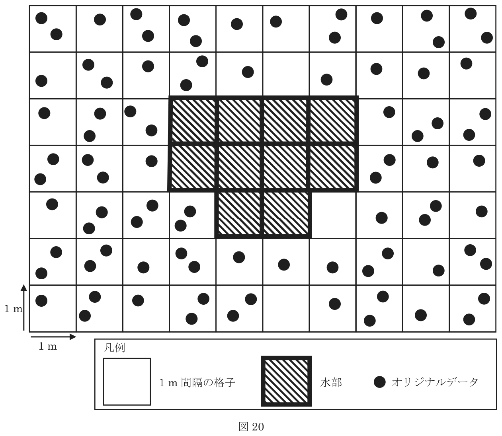
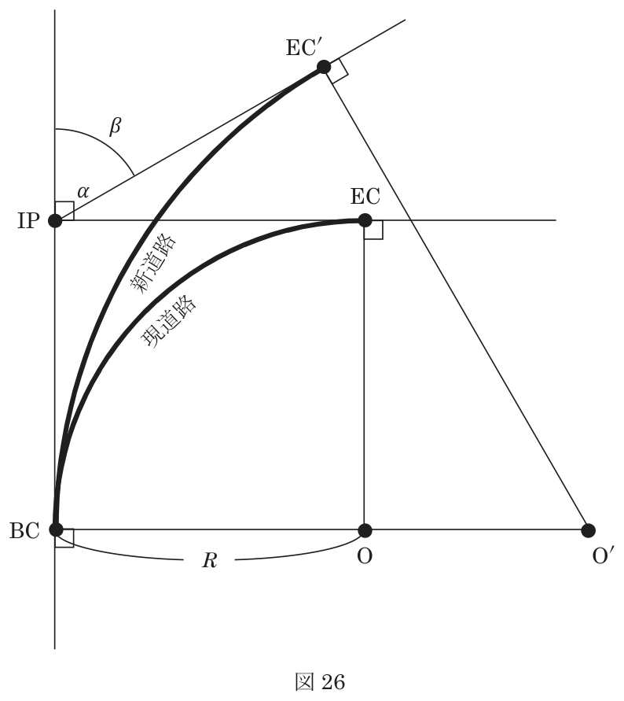
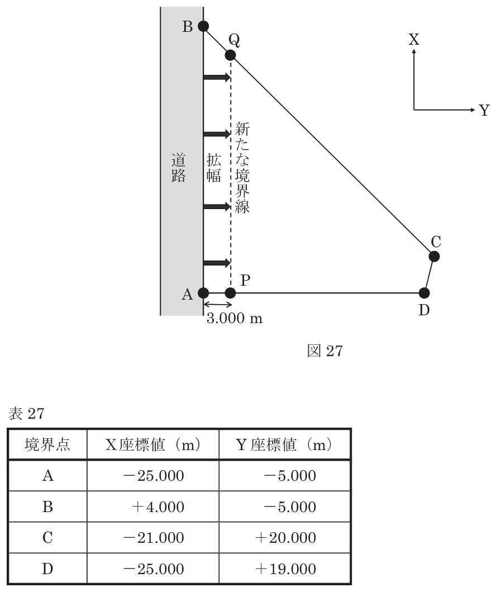

令和8年度（R8）計算問題
測量士補試験の計算問題 9 問。紙と鉛筆で解いてから「答えと解説」を開いてください。関数の値は試験の巻末の関数表を使います。
No.3数学
次の文の［ア］及び［イ］に入る数値の組合せとして最も適当なものはどれか。次の1～5から選べ。
なお，関数の値が必要な場合は，巻末の関数表を使用すること。
図3の三角形ABCは，辺ABの辺長が11 m，辺BCの辺長が14 m，辺CAの辺長が9 mである。このとき，∠ABCの角度は余弦定理によりおよそ［ア］と求められ，三角形ABCの面積はおよそ［イ］である。

- ア=40°／イ=49.5 m²
- ア=40°／イ=50.5 m²
- ア=41°／イ=49.5 m²
- ア=41°／イ=50.5 m²
- ア=41°／イ=51.5 m²
答えと解説
答え 1
3 つの辺が分かっていて角を出すときは、余弦定理を使います。角 B をはさむ 2 辺は 11 と 14、向かいの辺は 9 です。
＝ (121 ＋ 196 − 81) ÷ 308
＝ 236 ÷ 308 ≒ 0.766
関数表で cos 40° ＝ 0.76604、cos 41° ＝ 0.75471 なので、角 B はおよそ 40°（ア）。
面積は、底辺を BC、高さを h（A から BC に下ろした垂線）とします。h は斜めの辺 AB ＝ 11 に sin 40° を掛けた長さです。
面積 ＝ 14 × 11 × 0.64279 ÷ 2 ＝ 77 × 0.64279 ≒ 49.5 m²（イ）
No.7多角
図7に示すように，平たんな土地に点A，点B及び点Cを一直線上に設けて，各点におけるトータルステーション（以下「TS」という。）の器械高と反射鏡高を同一にして各点間の距離測定を行った結果，測定距離は表7のとおりとなった。器械定数と反射鏡定数を用いて表7の測定距離を補正したBC間の距離は幾らか。最も近いものを次の1～5の中から選べ。
ただし，AC間に高低差はないものとし，表7の測定距離は気象補正済みとする。また，本観測においてTS及び反射鏡は同じものを使用し，測定誤差は考えないものとする。
なお，関数の値が必要な場合は，巻末の関数表を使用すること。

- 676.104 m
- 676.154 m
- 676.164 m
- 676.184 m
- 676.224 m
答えと解説
答え 4
器械（TS）と反射鏡には、それぞれ決まったずれ（器械定数と反射鏡定数）があり、距離を 1 回測るごとに同じ量だけずれます。2 つを合わせた補正量を K とすると、本当の距離は「測った値 ＋ K」です。
A・B・C は一直線なので、本当の距離では AB ＋ BC ＝ AC になります。
966.704 ＋ 2K ＝ 966.744 ＋ K
K ＝ 966.744 − 966.704 ＝ 0.040 m
No.9GNSS
公共測量においてGNSS測量機を用いた基準点測量を行い，基線解析により基準点Aから基準点B及び基準点Cから基準点Bまでの基線ベクトルを得た。
表9は，地心直交座標系（令和7年国土交通省告示第518号）におけるX軸，Y軸，Z軸方向について，それぞれの基線ベクトル成分（ΔX，ΔY，ΔZ）を示したものである。基準点Aから基準点Cまでの斜距離は幾らか。最も近いものを次の1～5の中から選べ。
なお，関数の値が必要な場合は，巻末の関数表を使用すること。

- 316.228 m
- 447.214 m
- 547.723 m
- 632.456 m
- 707.107 m
答えと解説
答え 3
基線ベクトルは、ある点から別の点まで X・Y・Z の向きにそれぞれ何 m 進むかを並べたものです。A から C へは、A→B と進んだあと、C→B を逆向きにたどればよいので、A→B から C→B を引きます。
ΔY ＝ 100 − 300 ＝ −200 m
ΔZ ＝ −100 − 400 ＝ −500 m
斜距離は、たて・横・高さが 100・200・500 の箱の対角線です。上の面の対角線で三平方の定理、高さと合わせてもう 1 回で、3 つの 2 乗を足すことになります。
550² ＝ 302,500 なので、550 より少し小さい → 547.723 m
No.12水準
図12は，水準点Aから固定点(1)，(2)及び(3)を経由し，水準点Bに至る路線を模式的に示したものである。この路線で公共測量における1級水準測量を行い，表12に示す観測結果を得た。再測すべき観測区間として最も適切なものはどれか。次の1～5の中から選べ。
ただし，往復観測値の較差の許容範囲は2.5 mm√S，Sは観測距離（片道，km単位）とする。
なお，関数の値が必要な場合は，巻末の関数表を使用すること。

- 観測区間 A～(1)
- 観測区間 (1)～(2)
- 観測区間 (2)～(3)
- 観測区間 (3)～B
- 再測の必要はない
答えと解説
答え 3
較差は、行き（往路）と帰り（復路）で測った高低差の食いちがいです。帰りは符号が逆になるので、往路と復路を足したものが較差になります。
(1)～(2) −1.2125 ＋ 1.2139 ＝ 0.0014 m ＝ 1.4 mm
(2)～(3) 3.4157 − 3.4140 ＝ 0.0017 m ＝ 1.7 mm
(3)～B 0.7118 − 0.7114 ＝ 0.0004 m ＝ 0.4 mm
許容範囲 2.5√S と比べます。√ を出さなくても、「較差 ÷ 2.5」を 2 乗して S（km）と比べれば同じことです。
(1)～(2) 1.4 ÷ 2.5 ＝ 0.56 0.56² ≒ 0.31 ＜ 0.6
(2)～(3) 1.7 ÷ 2.5 ＝ 0.68 0.68² ≒ 0.46 ＜ 0.5
(3)～B 0.4 ÷ 2.5 ＝ 0.16 0.16² ≒ 0.03 ＜ 0.7
どの区間も許容範囲の中です。でも、これで終わりではありません。水準点 A から水準点 B までの全体でも確かめます。
全体の較差 ＝ 0.6 ＋ 1.4 ＋ 1.7 ＋ 0.4 ＝ 4.1 mm
4.1 ÷ 2.5 ＝ 1.64 1.64² ≒ 2.69 ＞ 2.2 → 許容範囲を超える
全体が超えているので測り直しが要ります。較差がいちばん大きい (2)～(3) の 1.7 mm が、全体を超えさせている一番の原因なので、ここを再測します。
No.14地形
細部測量において，基準点Aにトータルステーションを整置し，点Bを観測したときに2′10″の水平方向の誤差があった場合，点Bの水平位置の誤差は幾らか。最も近いものを次の1～5の中から選べ。
ただし，基準点Aと点Bの間の水平距離は103 m，角度1ラジアンは(2×10⁵)″とする。
また，距離測定と角度測定は互いに影響を与えないものとし，角度測定以外の誤差は考えないものとする。
なお，関数の値が必要な場合は，巻末の関数表を使用すること。
- 25 mm
- 40 mm
- 54 mm
- 67 mm
- 108 mm
答えと解説
答え 4
1 ラジアンは、半径と同じ長さの弧に向かう角です。だから、角をラジアンで表せば「弧の長さ ＝ 半径 × 角」になります。角がとても小さいので、B の横ずれは半径 103 m の弧の長さと考えてかまいません。
ラジアンにすると 130 ÷ 200,000 ＝ 0.00065
位置の誤差 ＝ 103 × 0.00065 ＝ 0.06695 m ≒ 67 mm
No.16写真
画面の大きさ24,000画素×15,000画素のデジタル航空カメラを鉛直下に向け，海面からの撮影高度3,000 mで標高0 mの平たんな地域の数値写真を撮影した。地上画素寸法を15 cm，撮影基準面の標高を0 m，撮影基線方向の隣接数値写真間の重複度を60%とするとき，撮影基線長は幾らか。最も近いものを次の1～5の中から選べ。
ただし，画面短辺が撮影基線と平行とする。
なお，関数の値が必要な場合は，巻末の関数表を使用すること。
- 900 m
- 1,350 m
- 1,440 m
- 2,160 m
- 2,250 m
答えと解説
答え 1
撮影基線長は、1 枚目を撮ってから 2 枚目を撮るまでに飛行機が進む距離です。まず、写真 1 枚が進む向きに写す地面の幅を出します。画面の短いほう（15,000 画素）が進む向きで、1 画素が地面の 15 cm なので
となりの写真と 60% 重なるので、ずれるのは残りの 40% です。
No.20点群
公共測量における航空レーザ測量により，格子間隔1 mのグリッドデータを作成したい。図20は，作成するグリッドデータの格子及び航空レーザ測量で得られたオリジナルデータの一部を示したものであり，範囲内に86点取得している。この範囲における欠測率は幾らか。最も近いものを次の1～5の中から選べ。
なお，関数の値が必要な場合は，巻末の関数表を使用すること。

- 4%
- 5%
- 12%
- 14%
- 19%
答えと解説
答え 2
欠測は、1 つの格子の中に点が 1 つも無いことです。水部（川や池などの水面）は計算の対象に含めないので、格子の数からも、点の無い格子の数からも除きます。
水部を除いた格子 ＝ 70 − 10 ＝ 60
点の無い格子 ＝ 3（図の青）
欠測率 ＝ 3 ÷ 60 × 100 ＝ 5%
No.26応用
図26に示すように，曲線半径R＝350 m，交角α＝90°で設置されている，点Oを中心とする円曲線からなる現在の道路（以下「現道路」という。）BC～ECを改良し，点O′を中心とする円曲線からなる新しい道路（以下「新道路」という。）を建設することになった。
新道路の交角β＝60°としたとき，新道路BC～EC′の路線長は幾らか。最も近いものを次の1～5の中から選べ。
ただし，新道路の起点BC及び交点IPの位置は，現道路と同じものとし，円周率π＝3.14とする。
なお，関数の値が必要な場合は，巻末の関数表を使用すること。

- 518 m
- 550 m
- 606 m
- 634 m
- 672 m
答えと解説
答え 4
円曲線は、まっすぐな道と道をなめらかにつなぐ円の一部です。新道路の半径 R′ が分かれば、路線長は弧の長さとして出せます。手がかりは、BC と IP の位置が新旧で同じこと、つまり BC から IP までの長さ（接線の長さ）が同じことです。
接線の長さ 現道路は交角 90° なので、BC・IP・EC・O は 1 辺 R の正方形になります。
新道路の半径 中心角は交角と同じ 60° で、O′ と IP を結ぶ線がそれを半分の 30° に分けます。直角三角形 BC・IP・O′ で
＝ 350 × 1.73205 ≒ 606.2 m
路線長 半径 606.2 m、中心角 60° の弧の長さです。
No.27応用
図27に示すように，境界点A～境界点Dで囲まれた四角形の土地があり，境界点A及び境界点Bは道路との境界となっている。土地を構成する各境界点の平面直角座標系（平成14年国土交通省告示第9号）に基づく座標値は表27のとおりである。
道路が拡幅されることになり，新たな境界線PQが引かれることとなった。線分ABと線分PQは平行であり，拡幅の幅が3.000 mである場合，点P，点Q，境界点C，境界点Dで囲まれた四角形の土地の面積は幾らか。最も近いものを次の1～5の中から選べ。
なお，関数の値が必要な場合は，巻末の関数表を使用すること。

- 328 m²
- 352 m²
- 386 m²
- 411 m²
- 432 m²
答えと解説
答え 1
まず、新しい境界の点 P・Q の座標を出します。X は北（上）、Y は東（右）です。AB は Y ＝ −5 でまっすぐ南北に伸びているので、3 m 広げた PQ は Y ＝ −5 ＋ 3 ＝ −2 の線になります。
Q：B から C まで Y は −5 → ＋20 で 25 m 増え、X は ＋4 → −21 で 25 m 減る
だから右へ 3 m 進むと下へ 3 m → X ＝ 4 − 3 ＝ 1 → Q（X ＝ ＋1、Y ＝ −2）
四角形を P と C を結ぶ線で 2 つの三角形に分けます。
PD ＝ 19 − (−2) ＝ 21 m PD から C まで ＝ −21 − (−25) ＝ 4 m
② ＝ 21 × 4 ÷ 2 ＝ 42 m²
面積 ＝ 286 ＋ 42 ＝ 328 m²